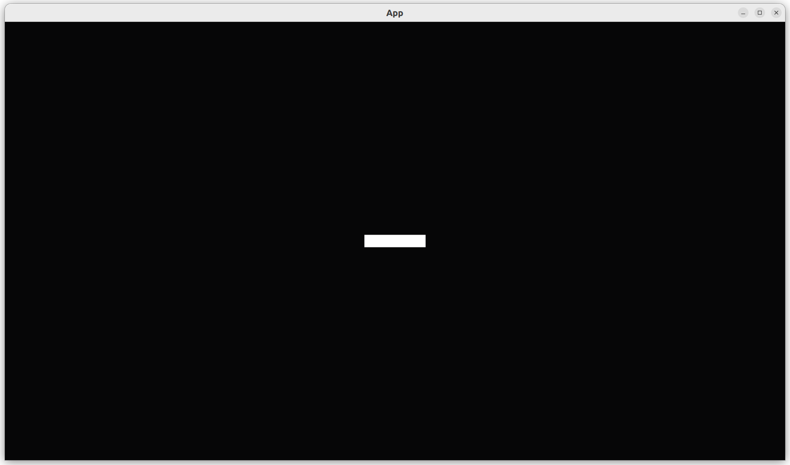
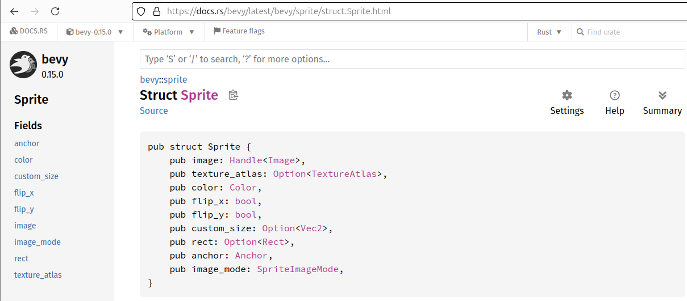

2.4. Add player sprite¶
This chapter shows how to add a player sprite to a game, at a certain position and of a certain size, starting from scratch again.

Bevy supports 2D, isometric ('2.5D') and 3D. For simplicity, the game we develop is 2D.
In this chapter, there are many good ways to the code. I picked the route that has no rewrites of old code in it, as this would best fit a book.
This chapter introduces:
- closures
- a Bevy
Transform - an in-function assertion
2.4.1.  First test: our
First test: our App needs a position and size¶
If we want to add a player sprite to the game
at a certain position and of a certain size,
our App needs to know.
Our first test forces us to supply this information in the create_app
function:
fn test_can_create_app() {
let initial_player_position = Vec2::new(0.0, 0.0);
let initial_player_size = Vec2::new(64.0, 32.0);
create_app(initial_player_position, initial_player_size);
}
As the game we create is 2D, both a position and a size are two dimensional.
The test is generous: calling create_app must be possible with two arguments,
after which it should not crash.
2.4.2.  First fix¶
First fix¶
A valid stub would be:
The variable names starting with an underscore (_) denote that
their values are allowed to be unused. This is perfect for a stub!
One could argue that one should do a complete implementation and store the position and size of the player somewhere. There are plenty of ways to do so, including quite unconventional ones. A consequence of doing TDD is a clean (and conventional) software architecture. Instead of doing funky things, settling for a stub is -as always!- perfectly fine.
2.4.3. Second test: an empty App has no players¶
Next step is to count the number of players of an empty App,
so we have a reason to add a player.
We did the same last chapter too.
Here is the code:
fn test_empty_app_has_no_players() {
let mut app = App::new();
assert_eq!(count_n_players(&mut app), 0);
}
This is the last time I will repeat tests that are identical to earlier chapters: it is not worth the space in a book.
The fix is identical to the one shown in the previous chapter:
- create the
count_n_playersfunction - implement the
Playermarker component
2.4.4. Third test: our App has a player¶
A slightly new test is to determine if create_app, now with
two arguments, indeed creates one player:
fn test_create_app_has_a_player() {
let initial_player_position = Vec2::new(0.0, 0.0);
let initial_player_size = Vec2::new(64.0, 32.0);
let mut app = create_app(initial_player_position, initial_player_size);
assert_eq!(count_n_players(&mut app), 1);
}
This test has no app.update() between creating the App
and running the tests, as create_app will do so.
In this case, when running our game normally,
our game will work as expected.
2.4.5. Third fix¶
To fix this test, we need:
- [x] a
Playermarker component: done in the previous test - [ ] a way to add a player with a certain position and size
- [ ] create a player sprite
- [ ] a way to store the player position and size in that sprite
The Player marker component already has been created in the previous test,
when counting the amount of players.
The way to add a player with a certain position and size is to
forward this problem to the add_player function:
we'll implement the add_player function soon,
but we'll start assuming that it does not only take
Commands as an arguments,
but also a player's position and size:
pub fn create_app(initial_player_position: Vec2, initial_player_size: Vec2) -> App {
let mut app = App::new();
let add_player_fn = move |commands: Commands| {
add_player(commands, initial_player_position, initial_player_size);
};
app.add_systems(Startup, add_player_fn);
app.update();
app
}
One can see that indeed add_player is called with three
arguments (commands, initial_player_position and initial_player_size).
However, that function call is wrapped inside of a closure.
That closure is called add_player_fn, where fn is a common abbreviation
of 'function'. We need this closure as a bridge between what we need (i.e.
a function with three function arguments) to what Bevy needs (i.e.
a function with one function argument).
Creating a player sprite and storing the player's position and size
is done in the add_player function:
fn add_player(mut commands: Commands, initial_player_position: Vec2, initial_player_size: Vec2) {
commands.spawn((
Sprite {
transform: Transform {
translation: Vec2::extend(initial_player_position, 0.0),
scale: Vec2::extend(initial_player_size, 1.0),
..default()
},
..default()
},
Player,
));
}
Here I unpack add_player:
commands.spawn((...,...)): adds a new entity that is a tuple of two thingsSprite { ... }: adds a BevySprite

Part of the Bevy Sprite documentation
transform: Transform { ... }, ..default(): initialize thetransformfield of theSprite, leave the rest at default valuestranslation: ..., scale: ..., ..default(): initialize thetranslationandscalefields with particular value, keeping the others at default values. A translation is a relative (3D) movement compared to the origin (i.e, at coordinate(0, 0, 0))Vec2::extend(initial_player_position, 0.0): create a 3D coordinate, by extending our 2D position with a z coordinate of zeroVec2::extend(initial_player_size, 1.0): create a 3D scale of the sprite, by extending our 2D size with a z scale of one. A z scale of one means that the sprite will have its regular scale
Note that the player's size is stored in the translate field. One could argue that
we do not set the player's size, but the player's translation instead,
hence the variable initial_player_size should be called initial_player_translation.
However, in this context, we (and our other users) do want to set the player's
translation and we should ignore that in the implementation details we need to
modify a translation. This is a good feature of TDD: it prevents us from using
needlessly technical names.
2.4.6. Fourth test: a player has a position¶
Our previous implementation could (and maybe should) have been done sloppier. Here we enforce that the player's 2D position is implemented correctly:
fn test_get_player_position() {
let initial_player_position = Vec2::new(1.2, 3.4);
let initial_player_size = Vec2::new(64.0, 32.0);
let mut app = create_app(initial_player_position, initial_player_size);
assert_eq!(get_player_position(&mut app), initial_player_position);
}
2.4.7. Fourth fix¶
Here is an implementation to get back the player's position from the complex thing we added:
fn get_player_position(app: &mut App) -> Vec2 {
let mut query = app.world_mut().query::<(&Transform, &Player)>();
let (transform, _) = query.single(app.world());
assert_eq!(transform.translation.z, 0.0); // 2D
transform.translation.xy()
}
The function is now a bit more complex.
The query now has (&Transform, &Player) tuple in its template arguments.
The English, the query would read as: 'let me ask for all entities
that have both a Transform and a Player component'.
The Transform component is one of the 7-9 components of a Sprite,
which we will need to get the translate field of.
The Player component is our own marker component, that now actually
marks something: it marks which Transform belongs to the player.
A Transform is a Bevy component that is used for other things too,
among others, the position of the camera. Due to this, we cannot query
only for Transform, as there will be more Transforms in our application.
As we asked for a query matching the tuple (&Transform, &Player),
our (single, thanks to single) result will be of the same type.
Of that tuple, we only keep the Transform and ignore the (empty) Player.
Of the Transform, we assume that the z coordinate is zero:
we are working on a 2D game after all! Instead of only assuming this to be
true, we can let Rust confirm this for real. The assert macros exist
to do exactly that. Hence, instead of commenting or documenting that the
z coordinate is zero, we assert this to be so.
Use assertions to document you assumptions [Lakos, 1996] [McConnell, 2004a]
[Stroustrup, 1997] [Sutter & Alexandrescu, 2004].
Use assertions liberally [Liberty, 2001] [Stroustrup, 2012].
Of the 3D Transform (with a z coordinate of zero),
we return the x and y coordinate of the translation.
2.4.8. Fifth test: a player has a size¶
Now we can work with a player's position, we do the same for a player's size:
fn test_player_has_a_custom_size() {
let initial_player_position = Vec2::new(1.2, 3.4);
let initial_player_size = Vec2::new(64.0, 32.0);
let mut app = create_app(initial_player_position, initial_player_size);
assert_eq!(get_player_size(&mut app), initial_player_size);
}
This test is nearly identical to the previous test,
except now for using get_player_size and comparing it to the
initial player size.
2.4.9. Fifth fix¶
The fix is nearly identical to the previous one:
fn get_player_size(app: &mut App) -> Vec2 {
let mut query = app.world_mut().query::<(&Transform, &Player)>();
let (transform, _) = query.single(app.world());
assert_eq!(transform.scale.z, 1.0); // 2D
transform.scale.xy()
}
This time, we assert that the player's scale is one, which is needed for (the correct rendering of) a 2D game.
2.4.10. main.rs¶
All our tests pass! However, we have not yet seen the player.
To see our game in action, we need to actually run the game.
Here is a main function:
fn main() {
let initial_player_position = Vec2::new(0.0, 0.0);
let initial_player_size = Vec2::new(64.0, 32.0);
let mut app = create_app(initial_player_position, initial_player_size);
let add_camera_fn = |mut commands: Commands| {
commands.spawn(Camera2d);
};
app.add_systems(Startup, add_camera_fn);
app.add_plugins(DefaultPlugins);
app.run();
}
New to this main function is adding a camera, again using a closure.
The camera is needed to display a sprite.
Without the camera, we will see nothing at all.
In chapter the chapter 'Add a camera'
we will add this camera in a TDD way.
This is how our game looks like now:
2.4.10. Conclusion¶
We can now create an App with one player sprite,
where the player has, among others, a position and size.
When running the App, we can see the player.
We have tested everything that the App does!
Full code can be found at https://github.com/richelbilderbeek/bevy_tdd_book_add_player_sprite.
2.4.11. References¶
[Lakos, 1996]John Lakos. Large-Scale C++ Software Design. 1996. ISBN: 0-201-63362-0. Chapter 2.6: 'The use of assert statements can help to document the assumptions you make when implementing your code[Liberty, 2001]Jesse Liberty. Sams teach yourself C++ in 24 hours, 2nd edition. 2001. ISBN: 0-672-32224-2. Hour 24, chapter 'assert()': 'Use assert freely'[McConnell, 2004a]Steve McConnell. Code Complete (2nd edition). 2004. ISBN: -735619670. Chapter 8.2 'Assertions', paragraph 'Guidelines for using asserts': 'Use assertions to document and verify preconditions and postconditions'[McConnell, 2004b]Steve McConnell. Code Complete (2nd edition). 2004. ISBN: -735619670. Chapter 8.2 'Assertions', paragraph 'Guidelines for using asserts': 'Use assertions for conditions that should never occur'.[Stroustrup, 1997]Bjarne Stroustrup. The C++ Programming Language (3rd edition). 1997. ISBN: 0-201-88954-4. Advice 24.5.18: 'Explicitly express preconditions, postconditions, and other assertions as assertions'[Stroustrup, 2012]Bjarne Stroustrup. The C++ Programming Language (4th edition). 2013. ISBN: 978-0-321-56384-2. Chapter 30.5. Advice. page 884: '[13] Use static_assert() and assert() extensively'[Sutter & Alexandrescu, 2004]Herb Sutter, Andrei Alexandrescu. C++ coding standards: 101 rules, guidelines, and best practices. ISBN: 0-32-111358-6. Chapter 68: 'Assert liberally to document internal assumptions and invariants'